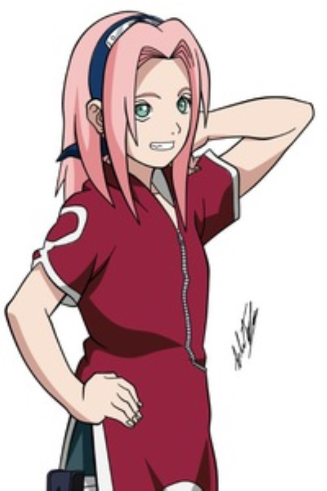

Сакура Учиха (яп. うちはサクラ, Учиха Сакура, урождённая Харуно (яп. 春野) — куноичи из Скрытого Листа. Став частью Команды 7, Сакура быстро осознаёт свою неподготовленность к суровой жизни шиноби. Тем не менее, после прохождения тренировок под руководством Саннина Цунаде, она преодолевает это и становится квалифицированным ниндзя-медиком. Превзойдя Цунаде, становится также самой могущественной куноичи своего времени.
Детства Сакуры Харуны
Сакура родилась у Кизаши и Мебуки Харуно. В академии ниндзя, Сакура была очень застенчивой, часто другие ученики подшучивали над ней из-за её широкого лба. Но не смотря на это, она стала подругой самой популярной и талантливой девочки Ино Яманака. В аниме, Сакура вместе с Ино, Шикамару Нара и Чоджи Акимичи, Кибой Инузукой, Акамару и Наруто Узумаки временно сдружились с загадочным ребенком по имени Юта, пока тот сам им не стер память после того, как они вытащили его из заточение Анбу Конохи. Однако, вскоре Сакура, как и Ино, влюбляется в Саске, единственного выжившего в кровавой резне из клана Учиха, в результате после этого подруги стали соперницами.
У Сакуры нежно розовые волосы, большие светло-зелёные глаза и светлая кожа. Сакуру часто дразнили из-за её довольно большого лба и это привлекло к тому, что она отрастила чёлку на лбу. Однако Ино дала ей ленточку, чтобы завязать волосы сверху. В первой части Сакура носит красное платье-ципао с разрезами до бедра по бокам, рукавами три четверти и без (вариации), зеленые шорты, на правой штанине сумка для кунаев, синие сандалии. На голове синяя повязка Конохи. Знак в виде белого круга присутствует на спине, на рукавах, на подоле. В начале у нее были длинные волосы, так как слышала, что Саске нравятся девушки с длинными волосами.[10] Но во время Экзамена на Чунина, Сакура отрезает свои волосы, чтобы защитить товарищей от шиноби из Деревни Звука.
Во второй части, Сакура, став чуунином, носит красную майку с высоким воротником на молнии с таким же дизайном, что и верхняя половина ее первой части костюма, и розовый протектор на голове, также розовую юбку с разрезами посередине и повязки на локтях, черные шорты, высокие сапоги и перчатки. На спине знак с изображением круга. В повседневной жизни, она одевает красную майку под ней белую рубашку и синюю юбку. Во время Четвертой Мировой Войны, Сакура носит стандартную форму шиноби, состоящую из зеленого жилета чунина, также, она завязывала свои волосы в хвост во время работы с Шизуне.[11] Кроме того, она получает на лбу Бьякуго, в форме фиолетового ромба, что и ее наставница.
Взросление Сакуры
В начале первой части, Сакура показана как уверенная в себе и вежливая девочка со своими принципами. Хотя она робеет, находясь рядом с Саске, а также поддаётся эмоциям, соперничая с Ино, в основном она кажется сдержанной. На самом деле это уловка, хотя и не лицемерие; часть маски, за которой Сакура скрывает свои настоящие чувства. Вместо того, чтобы показывать эти эмоции внешне, она проецирует их в своём подсознании, обращаясь к так называемой «Внутренней Сакуры» (内なるサクラ), которая выражает своё личное мнение, чьи появления сопровождаются восклицанием «Шаннаро!», в некотором смысле выступает как самостоятельная личность, что позволяет ей преодолеть действие Техники Переноса Разума Ино Яманака.[12] В то же время, Сакура и внутренняя сторона неотделимы друг от друга, как правило, по отношению к Наруто Узумаки: если тот говорит или делает что-то, что раздражает или расстраивает её, Сакура реагирует с применением физической силы
По мере действия первой части, Сакура, будучи студентом Академии, обучается лишь в теории и избегает физических испытаний, в связи с чем она всецело сосредотачивается на своей внешности в попытках обратить на себя внимание Саске. Став куноичи, она обращает внимание на свои недостатки в навыках ниндзя, которые могут послужить провалом для успешного выполнения миссии её товарищам по команде. Из-за того, что Сакура не может внести большой вклад в бою и вынуждена полагаться на Наруто и Саске, она сильно разочаровывается в себе, однако клянётся избавиться от этой черты, посвятив обучению почти три года, чтобы стать равной Наруто и Саске. В то же время, она готова принести себя в жертву, чтобы защитить их, так как оба товарища много значат для неё.[13] Для Сакуры, Наруто выступает в качестве модели для подражания в рамках этой цели, будучи вдохновлённой его быстрым ростом и его решимостью, чтобы защитить её и других близких для него людей. Когда Сакура понимает, что она так же груба с Наруто, как Саске обычно ведёт себя с ней, она начинает относиться к нему лучше.
Поскольку Сакура наконец разобралась со своими чувствами и может высказать своё мнение, благодаря годам тренировок с Цунаде, Внутренняя Сакура появляется в начале второй части, а затем исчезает навсегда.[14] Несмотря на то, что она всё ещё считает Наруто идиотом, она хорошо относится к нему, забывая раннее пренебрежительное отношение. Теперь она высоко ценит его способности, заботится о его безопасности и благополучии, и оценивает его как одного из своих самых близких друзей. Хотя она и критикует извращённую природу Наруто, сама Сакура также имеет извращённую сторону, получая удовольствие от того, что даже Наруто считает отвратительным. По словам Сая, из-за чувств, что Наруто питает к Сакуре, он ставит обещания, данные ей, выше собственной жизни, лишь бы сама Сакура была счастлива. Сакура была тронута до слёз этим признанием, чувствуя вину за боль, которую она причинила Наруто; и, несмотря на попытки взять на себя ответственность за свои проблемы, она по-прежнему полагается на него из-за своей сомнительной решимости, которая практически стоила ей жизни. В конечном итоге, она ставит перед собой цель помочь Наруто в его попытках вернуть Саске; разобраться в его проблемах в качестве Джинчуурики и, по возможности, сражаться на его стороне. Она сама подставляет себя под угрозу, чтобы уберечь других и обеспечить победу для своих союзников.[15] Как и большинство девочек в академии, Сакура была влюблена в Саске, и на протяжении первой части, она пытается провести больше времени с ним и добиться от него взаимности, от чего он зачастую не обращая на девушку никакого внимания. Несмотря несовершенство юноши, чувства Сакуры перерастают в любовь к концу первой части, в которой она признаётся ему, когда он собирается покинуть Конохагакуре. Несмотря на то, что он благодарит Сакуру, её слова не заставляют его передумать.[16] Этот отказ сильно расстраивает Сакуру, из-за чего она умоляет Наруто вернуть Саске домой и, когда Наруто терпит неудачу, она мотивирует себя стать сильнее.[17] Тем не менее, во второй части Саске ведёт себя с ней ещё холоднее, не заботясь о её безопасности и даже намереваясь убить её. Сакура пытается отказаться от своих чувств, когда Саске становится международным преступником, пытаясь убить его не только ради Конохи, а также для того, чтобы остановить его падение во тьму,[18] но её любовь к нему оказывается слишком сильной, чтобы причинить ему вред, что едва не стоит ей жизни.[19] Даже к концу Четвёртой мировой войны Шиноби она питает надежду, что всё ещё что-то значит для него.[20] Наруто, наконец, выполняет своё обещание после войны, после чего Саске извиняется перед Сакурой за своё поведение, и теперь относится к ней с добротой, так как он тычет ей пальцами в лоб в знак привязанности, что он приобрёл от своего брата.[21] В результате чего, они спустя несколько лет обручаются и у них рождается дочь по имени Сарада. После бракосочетания с Саске, Сакура становится очень преданна ему и даже самостоятельно занимается воспитанием дочери, в то время как Саске странствует по миру ради искупления своих грехов, и часто убеждает дочку, что Саске любит их обеих и вернётся домой, как только закончится его миссия. Сакура имеет очень близкие отношения с дочерью, хотя это не значит, что она не сердится на Сараду. Хотя Сакура с пониманием относится к обязанностям Саске, она разочаровывается, когда он дразнит её, отказываясь показать свою любовь.
Два года спустя, Сакура носит красное кимоно, напоминающее её предыдущую одежду из первой части, обвязанное чёрным поясом, к которой со спины присоединена небольшая сумка. Под кимоно носит черные шорты, на забинтованной правой ноге сумку для кунаев. Также черные перчатки, на локтях рук и колен ног повязки розового цвета. Обута в сандалии, на голове носит красный протектор Конохи. В свободное время она носит белые штаны и жёлтый свитер а поверх нее красную куртку. Обута в сандалии на невысокие каблуках, а на голове носит красный ободок. На её шее висит кулон (такой как у ее отца). Несколько лет спустя, Сакура носит длинное красное платье с большим разрезом спереди с гербом клана Учиха на спине, брюки светлых тонов и сандалии на каблуках. Ее волосы всё также короткие, но когда она растила Сараду, ее волосы снова были длинными. Вне служебных обязанностей, она изредка носит одежду с символом клана Учиха.
Карера Сакуры
В аниме Сакура, Наруто и Джирайя отправились на поиски Саске, после
этой миссии, девушка и просит Цунаде обучить ее медицинским техникам.
Вскоре она вместе с Чоуджи и Наруто спасают дочь Теучи, Аяме. Также
она участвовала в миссии вместе с Наруто и Роком Ли в сопровождение
ниндзя отступника, за которым охотилась группа шиноби. Во время миссии
в помощи шиноби Песка, Сакура не участвовала в битве а служила в
качестве ниндзя-медика, тем временем, Ино стала завидовать новым
способностям Сакуры, и решает пойти по её стопам.
В аниме Сакура
фокусируется на ее обучении, не позволяя себе помогать Наруто со
многими миссиями, которые он продолжает. Когда он возвращается с одной
такой миссии, она сообщает ему, что ей удалось исцелить рыбу.
В
аниме Сакура помогает Наруто и Чоуджи Акимичи спасти Аяме. Чтобы
спасти, они должны подготовить идеальный рамен; Сакура вносит свой
вклад, забивая тесто лапши в форму.
В аниме Сакура и Ино
исследуют труп, который, как полагают, принадлежит Гену. Они делают
вывод, что на самом деле это не он.
В аниме Сакура и остальная
часть Конохи 11 отправляются в Сунагакуре, чтобы помочь братьям и
сестрам в битве с четырьмя небесными символами. Сакура исцеляет Гаару
во время боя с Суйко. Ино, ревнуя к новым исцеляющим способностям
Сакуры, просит обучить Сакуру медицине. Сакура соглашается, но Ино
встревожена, когда Сакура напоминает ей, что она будет ее младшим во
время обучения.
В аниме, проходит два года, после того как Наруто с Джирайей покинул деревню, Сакура в это время обучаясь у Цунаде, принимает участие в Экзамене на Чуунина, которое Конохагакуре проводит вместе с Сунагакуре. Поскольку участники должны быть в команде из трех человек, Ино предлагает Сакуре присоединится в их команду для замены Шикамару, который уже чуунин. В ходе первого экзамена, Сакура, Ино и Чоуджи сидят в разных комнатах, где проходят письменный тест, с помощью телепатии Ино. Также они проходят, тест на вопрос: в которой, каждая команда должна единогласно решить дисквалифицировать одного из членов их команды от остальной части экзаменов, команда 10 не собираются следовать этим, тем самым проходят для следующего этапа. Вскоре те, кто прошли первый экзамен должны перегруппироваться в течение трех дней до Пустыни Демона, для участия второго экзамена. Команда 10 успешно добираются и получают ту же цель, как несколько лет назад во время экзамена: получить свиток из другой команды. Им удается получить свиток, после того, как они бродили по пустыне в течение трех дней, они решили направиться в сторону оазиса для пополнения воды, где подвергаются нападению команды Амено.[22] Но благодаря вновь телепатическим способностям Ино, которая координирует силы Сакуры и Чоуджи, команда 10 одерживает победу над командой Амено. После того, как Сакура и Ино исцеляют свои травмы, команда Амено предлагает им обменяться свитками, однако у них обоих одинаковые свитки. После чего две команды идут разными путями, согласившись встретиться снова в третьем экзамене.[23] Когда Сакура, Ино и Чоуджи решают взять альтернативный маршрут к центральной крепости чтобы избежать повторной засады, Сакура теряет силы из-за постоянного хранения чакры в Резервной Печати Бьякуго. После того как она приходит в себя, ее команда подвергается нападение команды Сая из Скрытого Песка, чей лидер смогла обездвижить Ино и Чоуджи. Однако Сакура одним ударом одерживает победу над командой Сай, затем исцеляет товарищей.
Цунаде сообщает Сакуре о возвращении Наруто после двух с половиной лет обучения. Она встретив юношу, ей изначально кажется, что Наруто повзрослел с момента их последней встречи, однако всё встаёт на свои места, когда он собирается провести с Конохамару дуэль в извращенной технике. Вместе с ними, Какаши реформирует команду 7 и проводит ещё одну тренировку с колокольчиками. Какаши исчезает вскоре после начала испытания и Сакура приходит к выводу, что он под землёй. Чтобы выманить его на открытое пространство, она бьёт по земле Окашо, пугая своей разрушительной силой Какаши и Наруто. Несмотря на явное улучшение их способностей, Сакура и Наруто хитростью отбирают колокольчики у Какаши, под угрозой рассказать концовку его книги серии Ича Ича романа Джирайи. В то время как команда 7 пытается найти миссию, до Конохи доходят вести о похищении Акацуки Гаары, ставшего Казекаге. Команда Какаши отправляется в Сунагакуре, чтобы оказать деревне помощь и спасти их правителя. Достигнув деревни Песка, они находят Канкуро, который был отравлен членом Акацуки Сасори, во время его неудачной попытки спасти Гаару, Сакура удаляет яд из его тела и разрабатывает несколько антидотов, чем впечатляет Чиё. Бабушка Сасори, в конечном счёте, решает сопровождать команду Какаши, чувствуя ответственность за преступления своего внука и помогая им ориентироваться в чужой стране.
С уничтожением Хируко, Сасори использует в бою человеческую марионетку Третьего Казекаге. С её помощью он атакует Сакуру и Чиё, но благодаря той, Сакура успешно отбивает его атаки. Несмотря на это, ей не удаётся уклониться от атак, в результате чего она получает несколько царапин и, казалось бы, постепенно умирает от яда. Чтобы спастись, она использует изготовленное противоядие и разрушает марионетку Сасори. Возмущённый этим, Сасори показывает, что его собственное тело является марионеткой, и он направляется к Чиё. Сакура перехватывает его атаку и разрушает тело, но Сасори в состоянии собрать его снова. Против куноичи Сасори выставляет армию своих марионеток, на что Чиё отвечает своей техникой марионеток. Хотя его настоящее тело удаётся запечатать, Сасори передаёт своё сердце другой марионетке и собирается убить Чиё со спины. Сакура подставляется под удар и получает смертельное ранение и отравление. В то время как Чиё даёт ей последнее противоядие, Сасори снова нападает на неё, только чтобы попасть в её ловушку и быть зарезанным в сердце куклами своих матери и отца. Затем Чиё лечит рану Сакуры. В качестве вознаграждения за её победу, Сасори рассказывает Сакуре о своём шпионе, находящимся в рядах Орочимару, с которым он должен был встретиться в Кусагакуре через десять дней. По просьбе Чиё, Сакура относит её к Наруто и Какаши, которым удалось вернуть Гаару. Сакура пытается вылечить Гаару, но извлечение Однохвостого привело к его смерти. Ценой собственной жизни, Чиё воскрешает его при помощи запретной медицинской техники возрождение. По мере того как техника близится к завершению, Чиё предупреждает Сакуру не рисковать своей жизнью, чтобы защитить кого-то старого вроде неё, полагая, что жизнь молодой куноичи ценнее. Гаара возвращается к жизни и, несколько дней спустя, команда 7 и команда Гая присутствуют на похоронах Чиё в Сунагакуре, прежде чем вернуться домой.
Семейная жизнь Сакуры
Через несколько лет спустя, Сакура путешествует вместе с Саске, после чего они женятся. После этого Сакура рожает дочь по имени Сарада в одной из убежищ Орочимару, под заботой Карин. Несколько лет спустя, она и Сарада наблюдают за инаугурацией Наруто. В какой-то момент, Сакура присутствует на Совете Каге, созванном Саске, для обсуждения мотивов Кагуи в формировании армии Белых Зецу. После решения держать эту информацию в секрете, Саске вновь покидает Коноху, чтобы продолжить своё расследование, и Сакура самостоятельно воспитывает их дочь. Спустя еще несколько лет, во время Совета Пяти Каге, Сарада приходит домой, где жалуется маме о том, что все мальчики глупые, но в тот же момент отмечает их сходство с Боруто Узумаки, из-за отношений c отцами.
Сарада Учиха
В аниме, Сакура с Ино собиралась ненадолго покинуть деревню, но забывает вернуть обратно плюшевого мишку одной пациентки, которого она взяла, чтобы зашить его. Вместо нее, медведя возвращает Сарада, с большим трудом. Тем временем, Сакура и Ино прибыли к Приморской скале, где когда-то у нее было первое свидание с Саске, затем обе девушки обсуждают о Саске. Сакура приходит домой той же ночью, затем мать и дочь спрашивает другу друга, как прошел их день. На протяжении многих лет, Сарада расспрашивает мать о своём отце, когда разговоры продолжаются слишком долго, Сакура тычет пальцами в лоб Сарады и обещает продолжить их в другое время, переняв знак привязанности Саске. Вскоре Сарада, снова спрашивая маму о своем отце, выражает свое сомнение в отношение мамы с ним, на что Сакура злится и случайно разрушает дом. После этого, через мгновение девушка теряет сознание, и Сарада оставляет обессилившую маму у Шизуне, от которой позже Сакура узнает, что ее дочь ушла из деревни, чтобы найти своего отца.
Вскоре, отправившись за дочерью, Сакура неожиданно атакует и побеждает с одного удара Шина Учиха, который со своей армией клонов недавно напал на ее семью, а также на Наруто и Чоучоу Акимичи. Однако, Шин отступает в свое убежище, тем самым взяв собой Сакуру в заложники, где он убивает своего клона, чтобы использовать как донора для пересадки органов. Во время разговора, Сакура узнает, что Шин и его клоны является искусственными людьми, созданный Орочимару, затем девушка готовится сразится с ним, когда Шин завершает трансплантацию органов. Во время их битвы, Шин задевает левое плечо девушки, но Сакуру спасают Саске, Наруто, Сарада и Чоучоу. Когда Шин приказывает своим клонам атаковать друзей Сакуры, то клоны пронзают его, заявляя, что он теперь им не нужен, однако, они сами были побеждены ее дочерью и Наруто, с помощью влияние Курамы.
После этого клонов Шинов передают в Сиротский дом под опеку Кабуто Якуши и Уруши, а Сакура с близкими возвращаются в Коноху, где Саске на одну ночь проводит время в кругу семьи. На утро перед тем как продолжить путешествие он прощается с Сарадой, дотронувшись двумя пальцами до лба, Сакура надеется на такое же прощание, но он просто уходит, вызвав разочарование у нее.
Подробное описание здесь...